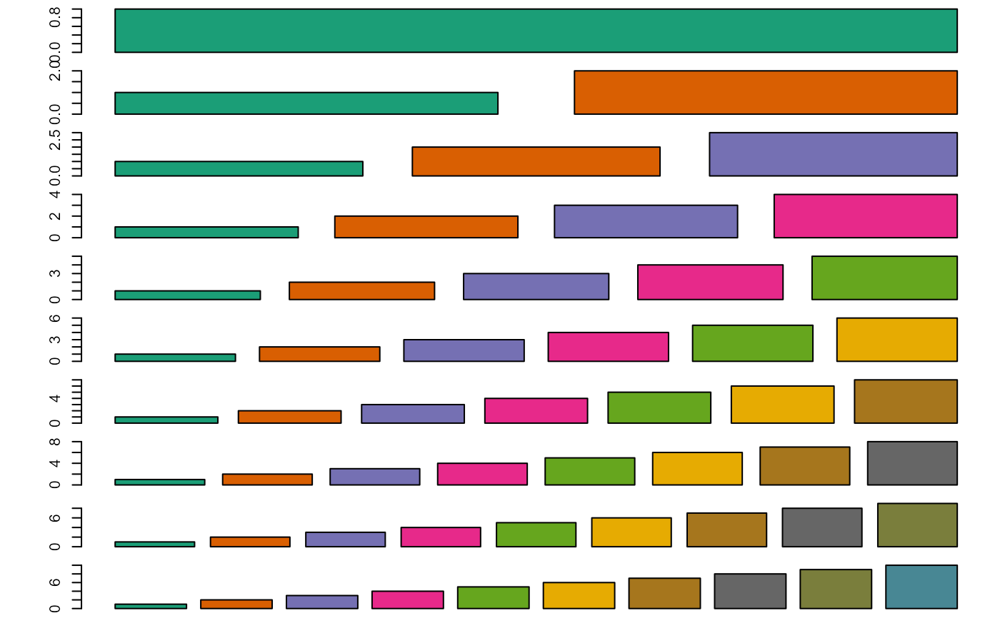

Extends a base-palette of the package RColorBrewer to n colors.
Source:R/palette.R
ExtendPalette.RdThe colors in the returned palette are always in the same order
Examples
ExtendPalette(12)
#> [1] "#E41A1C" "#377EB8" "#4DAF4A" "#984EA3" "#FF7F00" "#FFFF33" "#A65628"
#> [8] "#F781BF" "#999999" "#8D4C6A" "#986433" "#BE345F"
nPalette <- 10
par(mfrow = c(nPalette, 1))
par(mar = c(0.5, 4.5, 0.5, 0.5))
for (i in seq_len(nPalette)) {
pal <- ExtendPalette(n = i, base = "Dark2")
barplot(seq_len(length(pal)), col = pal)
print(pal)
}
#> [1] "#1B9E77"
#> [1] "#1B9E77" "#D95F02"
#> [1] "#1B9E77" "#D95F02" "#7570B3"
#> [1] "#1B9E77" "#D95F02" "#7570B3" "#E7298A"
#> [1] "#1B9E77" "#D95F02" "#7570B3" "#E7298A" "#66A61E"
#> [1] "#1B9E77" "#D95F02" "#7570B3" "#E7298A" "#66A61E" "#E6AB02"
#> [1] "#1B9E77" "#D95F02" "#7570B3" "#E7298A" "#66A61E" "#E6AB02" "#A6761D"
#> [1] "#1B9E77" "#D95F02" "#7570B3" "#E7298A" "#66A61E" "#E6AB02" "#A6761D"
#> [8] "#666666"
#> [1] "#1B9E77" "#D95F02" "#7570B3" "#E7298A" "#66A61E" "#E6AB02" "#A6761D"
#> [8] "#666666" "#7A7E3C"

#> [1] "#1B9E77" "#D95F02" "#7570B3" "#E7298A" "#66A61E" "#E6AB02" "#A6761D"
#> [8] "#666666" "#7A7E3C" "#488794"